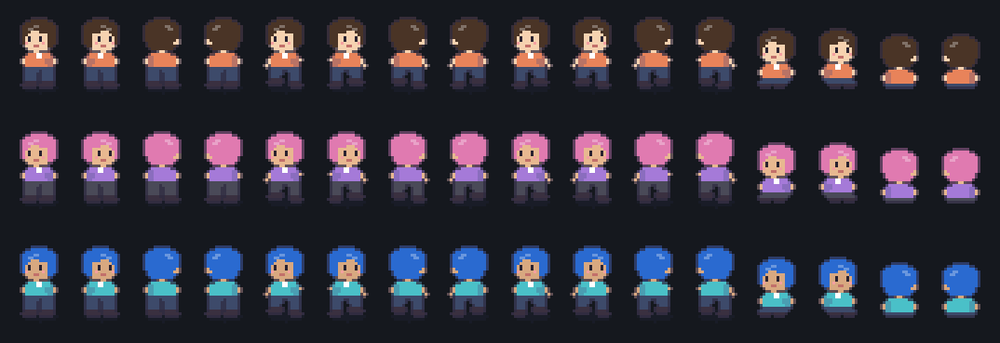
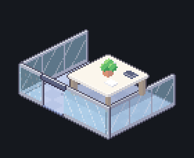
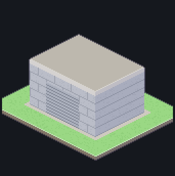
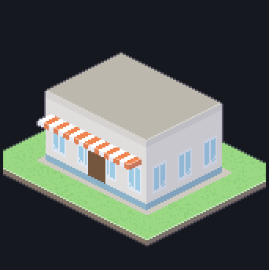
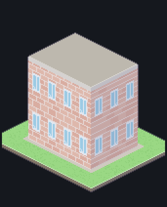
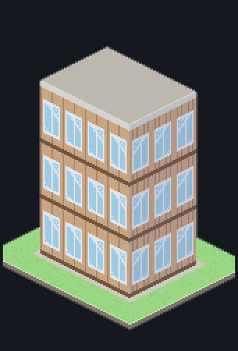
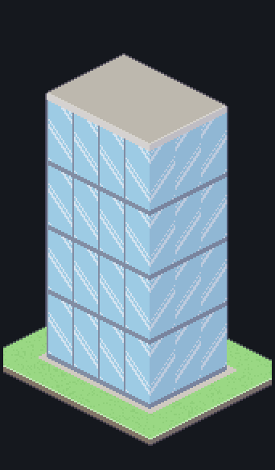
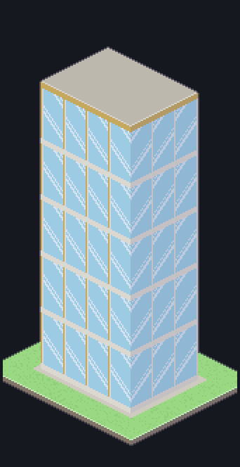

직원 · 고정 칸 · 외관
직원은 앞(↙)·뒤(↖)만 그리고 좌우 반전으로 ↘·↗ · 걷기 2프레임 · 앉기는 의자 좌석과 등받이 사이에 끼운다
직원 (3배 확대) — 서기 · 걷기1 · 걷기2 · 앉기, 각 ↙ ↘ ↖ ↗

머리·피부·옷 색은 shared/look.ts 팔레트회의실 (바닥 + 유리 칸막이, 앞줄 문 칸은 비움)

4×3칸 예 · 칸막이는 조각마다 깊이 정렬외관 E1~E6

E1 차고 (Lv.1~2)
E2 1층 상가 (Lv.3~5)
E3 2층 벽돌 (Lv.6~9)
E4 3층 오피스 (Lv.10~13)
E5 4층 유리 사옥 (Lv.14~17)
E6 5층 타워 (Lv.18~20)